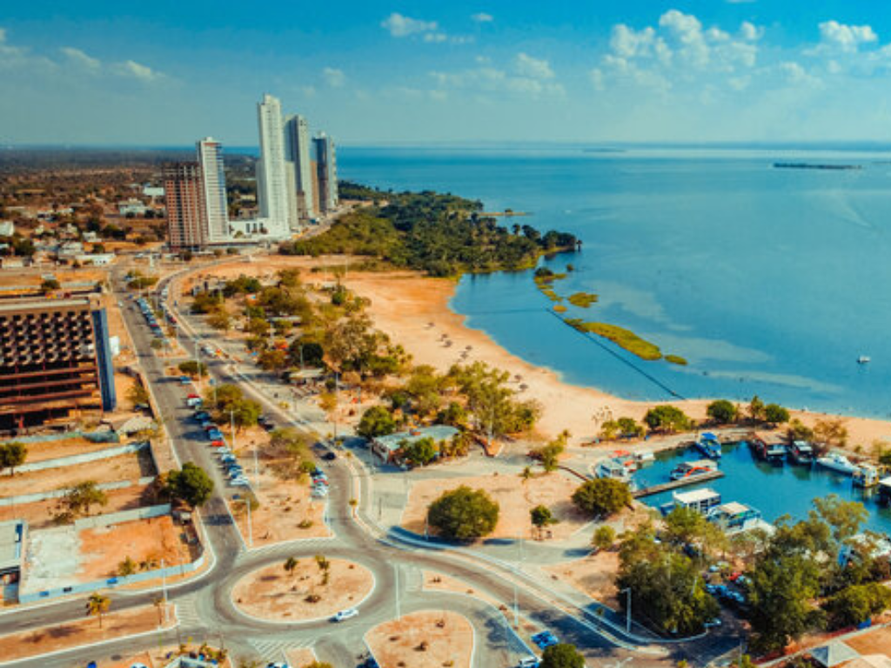

O estado de Tocantins é o mais novo do Brasil, criado em 1988 a partir da divisão do estado de Goiás. Localizado na Região Norte, Tocantins se destaca pela transição entre a Amazônia e o Cerrado, apresentando grande diversidade de paisagens naturais, rios e áreas de preservação ambiental. Sua capital, Palmas, é uma das capitais mais planejadas do país e possui crescimento urbano moderno. O estado também é conhecido por atrações naturais como o Jalapão, famoso por suas dunas, cachoeiras e águas cristalinas. A economia tocantinense é baseada principalmente na agropecuária, enquanto sua cultura reúne influências sertanejas, indígenas e nortistas.
